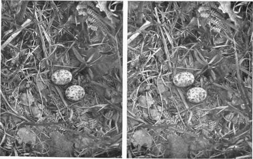

The Dark Room Developing And Printing. Continued
Description
This section is from the book "Nature Photography For Beginners", by E. J. Bedford. Also available from Amazon: Nature Photography for Beginners.
The Dark Room Developing And Printing. Continued
Fig. 18. Moorhens Nest.
Fig. 19. Nightjar's Eggs.
Unexposed plates should be stored in a dry place free from fumes of gas or chemicals, and will then generally keep in good condition for some time. Rapid brands of plates, however, have a tendency to deteriorate sooner than the slower kinds. Care should always be taken to keep the plates as far as possible from the red light when filling the slides or envelopes previous to exposure. They are much more sensitive then than when the image has appeared in the process of development, but I always keep the dish covered over during this operation, and only occasionally look at the plate to see how it is progressing.
The temperature of the developer has a great deal to do-with the time of appearance and quality of the image produced by development. In summer no difficulty will be experienced under this head, but in winter or during cold weather the temperature of the developing solution should not be allowed to fall under 6o°, or a plate which has received a correct exposure for normal development will appear under-exposed, and the image will be an unnecessarily long time in appearing, and in gaining detail and density. On the other hand, the temperature of the developer should not exceed about 650 or fog will probably result, and " frilling " may even take place.
Presuming artificial light is to be used for developing by, -we have now to consider the most convenient kind for the purpose. Electric light, gas, oil, or candle may be used. The first of these will require very little consideration, because the majority will probably find it not so convenient as the other kinds mentioned. For those workers who have the exclusive use of a room and who can arrange for the lamp to be permanently fixed in one position, gas will supply a convenient luminant, but for those who have to make temporary use of a room this arrangement will not answer and the oil or candle must be used. Personally I have never favoured oil, on account of the messy nature of it and the smell generally connected with an oil lamp, and do all my own developing with the light of a hard wax candle. This requires no trimming or attention, does not smell, and the light is always uniform and quite sufficient for its purpose. My own dark room lamp is one I constructed myself. It consists of a wooden box fourteen inches high, eight inches wide, and six inches deep. There are two pieces of glass which slide in grooves, one behind the other, and form the front. The outer one is of ruby glass and the inner one of ordinary glass to which two thicknesses of canary medium have been fastened. Every season the medium should be renewed, and a little vaseline rubbed between the two pieces will make them translucent, producing a pleasanter light to work by. The wooden top has a hole in it, over which a light-tight metal chimney has been fitted with an arrangement for ventilation, and the bottom of the box has several holes bored in it for the same purpose, and stands upon legs two inches high, the spaces between being covered in at the front and sides, but left open at the back. As already stated, the light is supplied by a hard wax candle. During the process of filling slides and in the early stages of development both the canary medium and the red glass are used, but by lifting the latter a few inches the density of the plate can be more easily judged when development is nearly complete. Of course, the plate must not remain more than a second or two in this light or it will be fogged. This lamp has answered so well that I have never required to have anything else, and so feel confident in recommending a similar arrangement as likely to prove satisfactory. There are plenty of ready made dark room lamps on the market, particulars of which may be found in any photographic catalogue, but the illuminating surface in most patterns is far too small, providing so little light in the dark room. As long as the quality of the light is all right, and no actinic rays are able to get through the coloured glass or medium, plenty of it is an advantage in many ways. Of course, the plate need not be developed close to the lamp, but even if it is and the dish is kept covered over, except during the brief periods of examination, no harm will result.
For travelling purposes, and for changing plates when on tour, I use one of the hock glass lamps in which is burnt a night-light or piece of candle. As I take a good supply of envelopes for plates, I generally change mine at night after it has become dark, by means of this hock glass lamp, round which I place a roll of canary medium for greater safety, as the less light used for changing plates by the better. Some photographers do this quite in the dark, but personally I like to see what I am doing. Whatever form of lamp is used it is necessary to see that no light escapes from it except through the proper place.
The beginner will also have to make choice of a suitable developer, and while there is no doubt our good old friend Pyro will do as much, and perhaps more in some respects, than any of the recent developing agents, yet from my own experience I cannot recommend its use. I gave it a good trial, but was obliged to discontinue using it on account of its staining properties. When a large number of negatives are developed with it the operator must expect to get his fingers badly stained with dirty-looking brown marks very difficult to get rid of and giving the hands the appearance of not having been properly washed. There are many non-staining developers on the market, each one of which has a certain number of adherents, who, no doubt, think their own particular choice is the best. I have experimented with a good many at various stages of my photographic career, but for a considerable time past I have used nothing but Rodinal, and that is the only one I intend to mention. I have developed hundreds of negatives with it, and it may be fairly described as a universal developer, being suitable for lantern slides, enlargements, and gaslight paper in addition to negatives. It is sold in the form of a solution, which only requires diluting with water for immediate use. Control of density can be obtained by varying the proportion of water, adding more of it for softer results. I generally use it in the proportion of one drachm of Rodinal to three ounces of water, to which is added from three to ten drops of a 10 per cent, solution of potassium bromide, and this gives me ample density. It should be borne in mind that a developer of this character, which gives a blue-black deposit, requires the density of the negative carried a little further than appears necessary to the eye on account of the actinic nature of the deposit compared with a yellow-staining developer like Pyro. In my own practice, when the negative appears to be about right in strength it is removed from the developer and placed in clean water for two or three minutes before putting it in the fixing bath, and I find it generally improves under this treatment.
Another advantage of Rodinal is that several plates may be developed in the same solution; in fact I often develop a dozen plates in the same lot of developer which has been strengthened from time to time by the addition of a little more of the stock solution. In development, air bubbles sometimes form on the surface of the plate while in the dish, and if allowed to remain will cause transparent spots on the negative when fixed, because the developer has not been able to act on the film where the bubble existed. A good way to prevent the formation of these bubbles is to gently brush the surface of the plate directly after the developer has been poured over it with a soft camel's hair brush kept expressly for the purpose. The kind required is known as a "mop" mounted in a quill, and should be kept in water when not in use.
I always aim for the production of a negative inclining to thinness, as I find for stereoscopic work, and also for the production of lantern slides and enlargements, this class of negative gives the best results.
The best kind of fixing bath to use is one made by adding bisulphite of soda to ordinary hypo in the proportion of one of the former to four or five of the latter, four ounces of the combined salts being dissolved in twenty ounces of water, which is equivalent to a pint. The acid fixing bath clears up the negative and prevents stains. My negatives are always left in the fixing solution for fully twenty minutes, as I believe more fading of negatives or prints is due to under fixing than to under washing. Negatives after washing should be dried as soon as possible. My own practice is to rest them against a board which has had some two-inch wire nails driven into it in horizontal rows at intervals of about three inches between the nails and about eight inches between the rows. The board should be previously placed against a firm support in a nearly vertical position so that it will not shift, and the negatives are then rested film downwards by one corner between two nails. This method enables a free circulation of air and at the same time prevents dust settling upon the film during the process of drying. If the board is placed at a distance of six or eight feet from a gas stove or fire drying will be hastened, but there must only be a moderate amount of heat or disastrous consequences will ensue. The temperature should not be changed during the drying process or unequal density may result. When the negative is thoroughly dry the back should be cleaned and a proof print taken from it. If this is satisfactory, a coat of varnish on the film side will protect it from injury and allow any necessary spotting to be done on the varnish without the risk of touching the unprotected surface of the film.
If the negative should require either intensification or reduction this should be done previous to varnishing. Full details of either of these processes will be found in any elementary text-book.
The most important thing necessary to produce a good negative is a correct exposure. If this has been secured-and with the help of an exposure meter one cannot go far wrong-no difficulty ought to be experienced in developing a good printing image in a reasonable time. If, on the other hand, the exposure has been under or over estimated, development will take longer and a less satisfactory negative be the result. Therefore a good rule to adopt is: Take care of the exposure and the development will take care of itself!
Continue to:
Tags
nature, photography, art, birds, camera